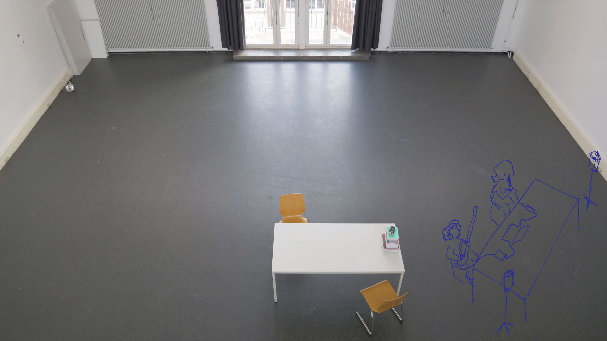

After meeting everyone, I had a lot more information to work with. It became clear that there will be as many different processes as there are participants, although I could recycle and distribute elements that I’ve tried in one session to another. Just as I consequently keep the body movement part the same for everyone, with thematic deviations to suit the personal processes.
Body movement
By the end of Session 3, I could sense that the participants are getting used to starting with arriving into the body and playing the room. Although every time, it requires a few minutes for most to accept that. Concerning the exercises we do (which you can find here), I take inspiration from dance and contact improvisation, gaga, yoga, meditation methods, mixed with techniques used in theatre. The main goals would be to explore the mind-body connection, to enhance proprioception and to accept one’s own body (movement). I generally start with walking around in the space, allowing everyone their moment to stretch and arrive. Dependent on the session and the participant, I would pick up the pace and enter a form of improvisation through using different metaphors and exercises, or asking questions. Since it’s only the two of us in the space, I join every bit, trying to enjoy myself as much as I can while keeping my movement slightly contained to not overwhelm the participant.
What I would like to experiment more with, is playing out scenarios and enacting situations bodily, without using any words. The first trials were okay, although I noticed how it asks extra confidence from myself and the participants, as the actions become very concrete and we are watching each other. Let’s try more of that! What the exact purpose or effect is, I can not tell yet. But when I apply a certain scenario, it’s carefully chosen to trigger something in the participant, leading into another exercise.
Two people requested to make body movement a bigger part of the sessions. For slightly different motives, but mainly because they both feel verbally strong, and therefore approaching and discovering the body artistically seems the right opportunity to take. More on body movement in a separate post.
Finding a beginning
Besides demanding a showing moment on the final session and establishing body movement as part of the 'OES curriculum', there are no pre-defined objectives that the participants or the facilitator have to follow. Therefore, the intention in the first sessions was to find a beginning, where someone starts to create something. With ‘expression support’ in the name, I would support participants in uncovering their creative desires, starting from what they already possess. To do that, I use open questions, mapping exercises and scenarios which I’ll call tools for sense making. It’s very uncomplicated, I’d ask an open question such as “What fascinates you?” or “What would you like to write about?” and let the participants write down what comes to mind. Subsequently, I would either give a follow-up question or ask to choose one particular aspect that can then be used as a prompt for a freewriting run.
This activity could be summarised in one dutch word: klankbord. Or sounding board in English. I would be the sounding board in this case, resonating thoughts back to the participants. For these conversations not to evaporate into the air, I tried to let the participants write, draw, or act out what they were telling me. Fair enough you want to express yourself, but then let’s do it creatively and deviate from the traditional therapy setting. Since I enjoy chatting away myself, it remains a challenging task.
Experimentation
Sensemaking and sharing are to be balanced with free experimentation. Okay, so we’re moving in the space at the beginning of every session. Then we usually sit down and check-in how the week has been and whether the participant managed to produce something. If that’s the case, for example, someone wrote a piece of text, we could pick up from there and think about what we could do next. Would it be interesting to narrate and record what you have? But then with different intonations? What if we strike a third of the story and completely rearrange it? Where would the sequel take place? Can you describe your character? What if this scene would be a dream, how would that change it?
The more the participant has produced, the more material there is to experiment with and distort. If there is nothing yet, then we start off with exercises which help create content, such as freewriting, within music, vocal jamming, or just start playing out a scenario.
The video above shows a participant recapping a session. In this case, a simple exercise such as freewriting, which is nothing more than providing space and time to get to it, made the creativity flow. But to organise that for yourself is of course a different cookie. And exactly there lies the potential of an Open Expression Support, that people can mutually engage in creative production.
Mutual Production
How does it help my personal work as an aspiring artist? Almost every exercise, everything we do, I join. There hasn't been a moment in my life where I have written freely more that I do now. And it becomes easier to get into a creative flow. However, I'm also all over the place and having a hard time gathering and refining that content. As during the sessions, there remains a strong focus on the actualisation of the participant. Because that's how I'm organising it at the moment. The focus is on them. Although, it depends on the participant. With almost everyone, there is a mutual exchange of thoughts, but with those who have similar taste, the exchange is more intense and productive.
Joining the exercises helps to get rid of the teacher-student aura. It happened that I joined participants brainstorming about a topic they'd like to work on. Understanding that it goes against the pedagogical approach of being neutral and avoiding to intervene, I'm trying to find a balance between showing something of myself (to be a person with opinions) and a neutral facilitator who only passes and reflects energies. When it comes to giving feedback on creative output, I generally try to avoid that unless it's explicitly requested. Instead, I'd ask certain questions or set up exercises to turn things upside down and try it a different way.
Getting deeper into the process, I notice how I'm leaving my 'artistic' mark in various ways. As I mainly set the agenda and have a limited set of skills and therefore situations to offer. For everybody who came to OES and wanted to write, I introduced the elements of narration, delivery and storytelling as that's what I'm currently interested in and can technically organise. Concerning my personal creative production during the sessions, my goal is to also show something towards the end of the process. Because sometimes I wonder whether people who desire to enable others to flourish creatively, do that to cope with their personal struggle to make art. That's what Felix also mentions in his interview.
Naivety
My naivety and newness to all of this lead me to try out different things, often taking observations of the every day into the sessions. When I asked a participant to reenact how her mother walks (who turned out to be dead), she came to me the week after and said she can’t stop analysing the way other people walk. By bringing in these little personal fascinations, I can partly convey to participants how I observe.
On the flip side, this naivety also leads me to take actions where the consequences are not considered. For example, when the same participant told me that she wants to write about vulnerability, I asked her to write down her life-motto, or rules to live by. A task that seemed easy for this particular participant. When she finished jotting it down, I immediately asked her to note in what way she is not living by that life-motto. This simple exercise ended up having a considerable effect on her personal life that week. And that’s something I didn’t think of, to me it was just a question that would trigger an interesting story, to find a beginning and to get writing. There were a few more cases where that happened, demanding or doing something that became very personal and difficult. But then it’s called ‘Open Expression Support’, one will get out as much as one can invest in the process.
To end with, I've come to follow an attitude: What's the next best thing to do?